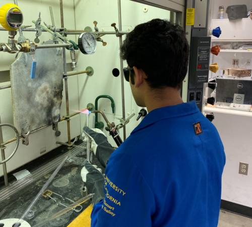
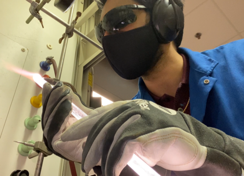

Ashwin Bhupathy
Currently a fourth year biochemistry major at UCR with a medical sciences emphasis with 4.0 GPA. At UCR, I have volunteered in the Fokwa material sciences lab for over 400 hours under recently graduated PhD Amir-Ardalan Rezaie. I performed synthesis work, mixing precise amounts of powdered elements using scales, using an arc furnace to react metals with boron, and performing glasswork to make vacuum tubes in which samples could react. Result analysis methods were also used, including x-ray diffraction and a little bit of microscopic crystal observation. This lab helped me learn adaptability to the unexpected with dangerous equipment as well as leadership in teaching new undergraduates all of these skills to ensure a safe laboratory environment.
I have also participated in an extended medical assistant externship under Dr. Jean Lacombe at the AFC Urgent Care in Riverside. I function effectively as a medical assistnat, rooming patients and taking their vitals and historiees for presentation to the attending physician. In addition, I perform various tests and prcedures including intramuscular injections and urinalysis. I have some experience aiding in topical procedures as well. Working at the AFC Urgent Care cemented my interest in medicine, allowing me to put my skills and knowledge to use by helping patients. I'm confident in my interpersonal skills with patients, a natural result of my desire to ease their worries. No matter what issue someone comes in with, my goal is to relieve them of some of the anxiety they may be experiencing about their problems by being a down-to-earth listener. The teamwork skills I've developed with the staff at AFC has also been invaluable, as the medical assistants who work there are goo, hard-working people whose level I try to meet every time I come in. The horizons of my knowledge have also broadened thorugh my time at the urgent care, as I have previously been tasked with preparing presentations on various topic including urinalysis and phlebotomy to be presented to visiting nursing students. These presentations have helped me develop a finer sense of how to convey varying depths of information to those around me.
Aside from my direct experiences in the lab and urgent care, I have also had the opportunity to visit the UCI Medical Center through two summer programs in high school. The Summer Surgery Program exposed me to many aspects that go into surgical doctors' work, and allowed me to have a hand at a few of those skills, namely laparoscopy. I was allowed to sit in on several surgeries, which gave me a better appreciation for the serious, precise nature of the teamwork that goes into operating room etiquette during surgeries. In the Summer Premed Shadowing Program, I among other students were allowed to observe medical teams of students, residents and attendings in action as they completed rounds and discusses what is to be done about the patients during their treatment at the hospital. These experiences, though not as hands on, have been essential to my understanding of the working of hospitals. My interest in internal medicine has been fostered greatly during my time shadowing Dr. John Karody in his practice in Riverside. Observing the manner in which he approached longitudinal care showed me exactly how well a doctor can keep track and take care of his patients.
Experience
Medical Assistant Extern
• Externed under Dr. Jean LaCombe in Riverside, CA
• Worked together with other medical assistants to create a frictionless workplace
• Aided in small procedures and conducted intramuscular injections, urinalysis, etc.
Laboratory Research Assistant
• Worked in the Fokwa material sciences laboratory at UCR
• Worked with arc furnace, hydraulic press and glasswork blowtorch
Patient Unit Volunteer
• Volunteered in the Acute Care unit at the Loma Linda Medical Center
• Worked to comfort patients around the hospital
• Developed interpersonal skills with patients
• Worked with nurses to create a better experience
Education
UC Riverside
Portfolio

